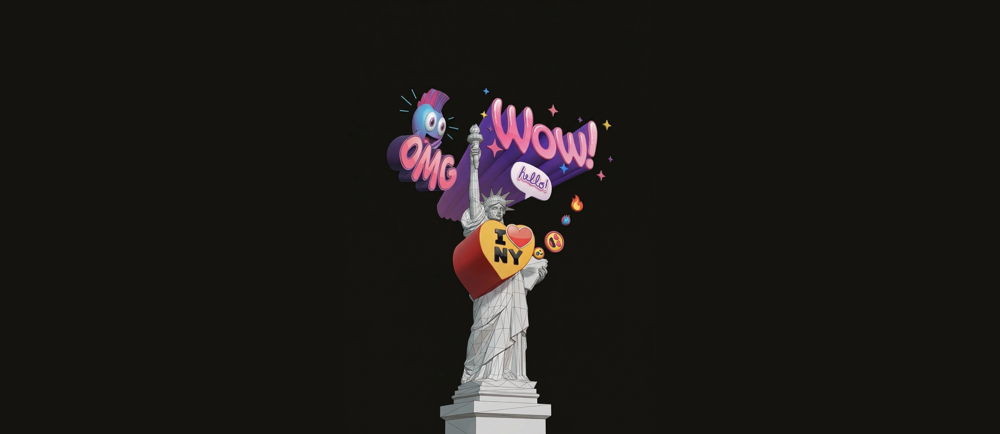
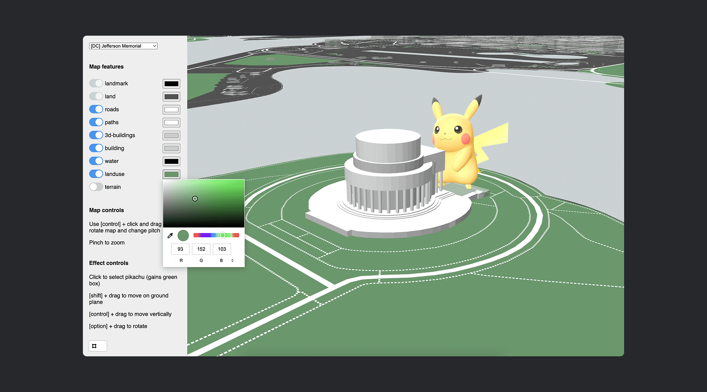
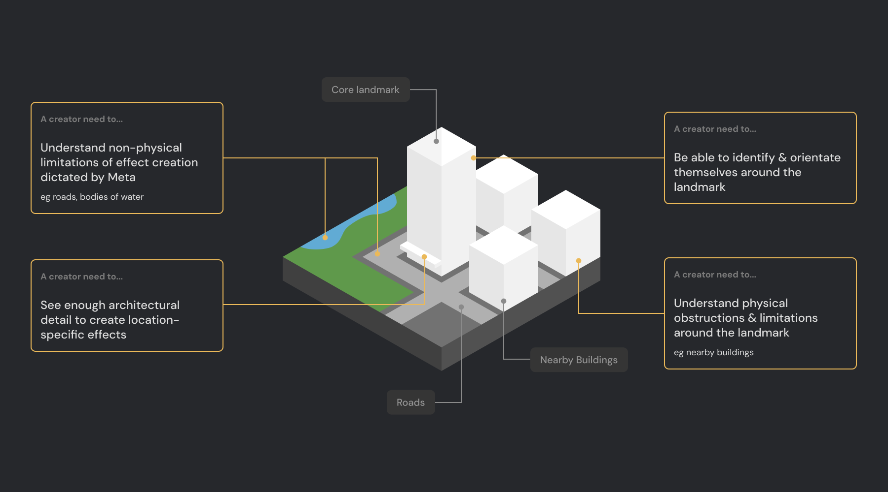
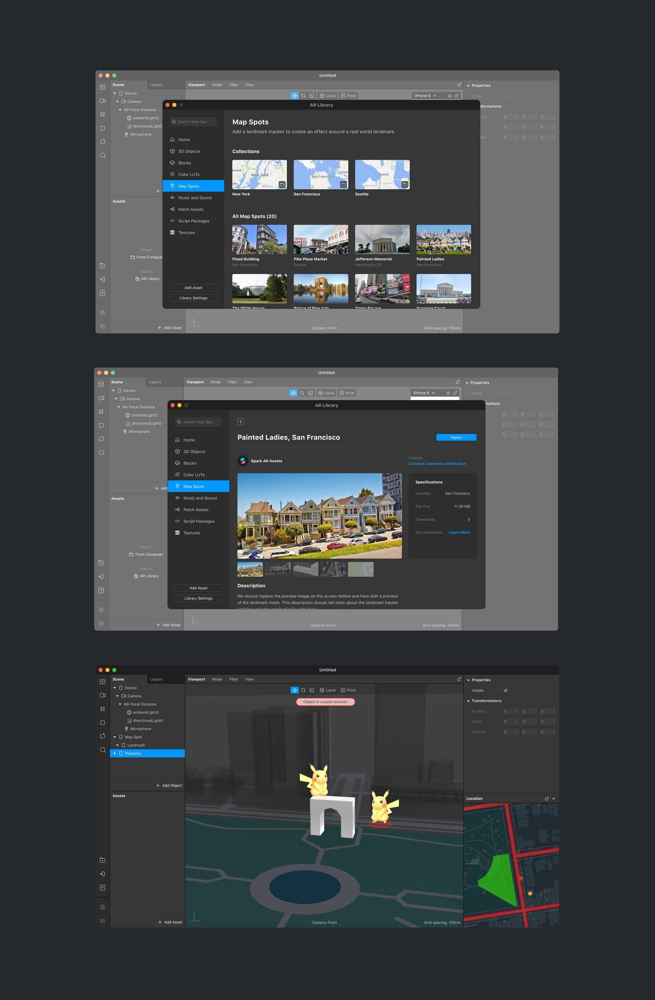

Navigating cross-organizational complexity to define the spatial data architecture required to bring world-scale AR to the Metaverse.
Overview
Pioneering the creation of location-based AR effects for the Metaverse by defining the spatial data requirements and cross-org integration strategy for Meta’s Spark AR platform.
Context
As part of Meta's broader push toward the Metaverse, the company wanted to expand its AR capabilities beyond users' living rooms and into public, city-scale locations (e.g., the Manhattan skyline, Seattle alleyways). While the Spark AR platform was already well-established for creating face filters and indoor effects, world-scale AR was entirely uncharted territory. Sitting on the Mapping team, I was tasked with leading the design efforts to integrate this massive new capability into Spark AR—a platform our team did not own.
Opportunity
Design a strategic integration framework to:
- Define the exact 3D spatial data (meshes) required for creators to build effects anchored to real-world architecture.
- Integrate this new capability into the Spark AR platform with minimal friction and zero disruption to their existing UX.
- Establish the foundational safety and spatial constraints required for public AR viewing.
Challenge
The project was immediately hit with compounding organizational and technical roadblocks:
- The Org-Chart Friction: Because we didn't own Spark AR, any proposed UI changes required intense negotiation and had to demand near-zero engineering effort from their team.
- The Engineering Disconnect: Our engineering team was highly motivated to use emerging photogrammetry tech to automatically generate dense point-cloud meshes of cities. It was highly scalable, but I knew immediately it would be completely unusable for creators trying to anchor precise 3D effects.
- The Safety Constraints: Public AR introduced unprecedented safety risks. We had to figure out how to communicate spatial viewing limitations (e.g., preventing users from standing in traffic) directly to the creator within the 3D canvas.
Approach
I had to pivot from designing interfaces to active consensus-building, using custom tooling to bridge the gap between engineering assumptions and creator realities:
- I designed and facilitated cross-functional workshops with internal creators to definitively prove that photogrammetric meshes lacked the architectural clarity required for effect anchoring.
- To break the engineering team's resistance, I independently built a lightweight 3D prototyping tool using Mapbox JS and OpenStreetMap data.
- I used this custom tool to run a collaborative workshop where engineers and creators could "design" their ideal mesh together. This exercise successfully built deep empathy, shifting the engineers away from photogrammetry and toward a creator-first mesh generation strategy.

Execution
With the engineering team aligned on the right technical approach, I defined the final spatial requirements and the platform integration strategy:
- Established a hybrid mesh architecture: high-fidelity geometric reconstruction for the core landmark, supported by low-fidelity OSM building data for the surrounding context.
- Defined critical safety "zones" within the 3D canvas to visually communicate viewing limitations to creators.
- Negotiated a heavily MVP integration with the Spark AR team, intentionally stripping back our feature requests to ensure core functionality launched without interfering with their existing product roadmap.


Outcome
While a sudden shift in company-wide Metaverse priorities ultimately paused the project just prior to launch, the strategic groundwork was complete and highly impactful:
- Defined the Standard: Produced the first fully defined, creator-tested requirements for world-scale AR meshes within Meta.
- Overcame Org Silos: Successfully built a collaborative bridge between the Mapping and Spark AR organizations, paving the way for future cross-platform integrations.
- Prevented Technical Debt: Saved the engineering team from building a highly scalable but ultimately useless photogrammetry pipeline, redirecting efforts toward a viable, creator-first solution.